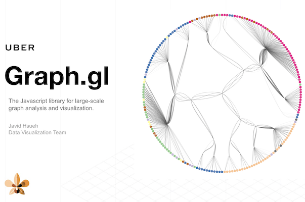
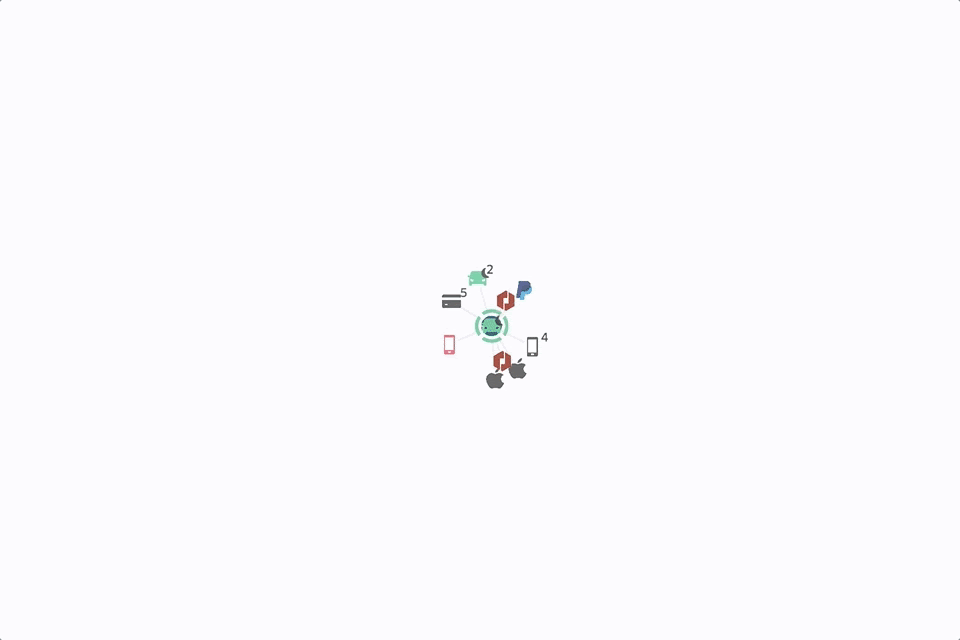

Graph.gl
is a React component for visualizing large graphs with several utility functions. With Graph.gl, users are enabled to build various type of graph/network applications with minimum efforts while having the capability to extend the existing styles and layouts.
Explore all media 2 items

Graph.gl
is a React component for visualizing large graphs with several utility functions. With Graph.gl, users are enabled to build various type of graph/network applications with minimum efforts while having the capability to extend the existing styles and layouts.

Uber knowledge graph
is aim to solve critical problems like fraud detection, criminal investigation, account abusing, long-hauling, driver onboarding, and even COVID-19 contact tracing.